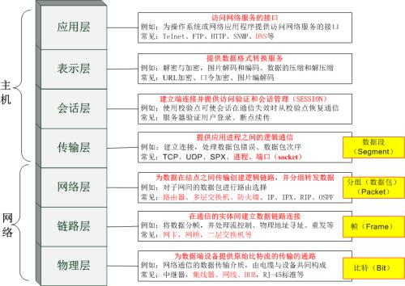
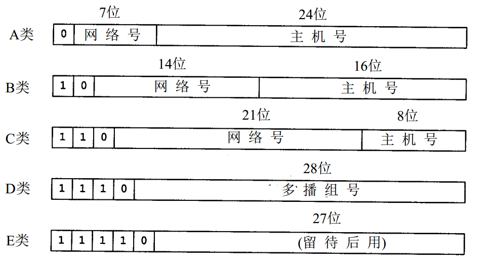

网络OSI七层模型

分层介绍
应用层
- 网络服务与最终用户的一个接口。
- 协议有：HTTP FTP TFTP SMTP SNMP DNS TELNET HTTPS POP3 DHCP
表示层
- 数据的表示、安全、压缩。（在五层模型里面已经合并到了应用层）
- 格式有，JPEG、ASCll、DECOIC、加密格式等
会话层
- 建立、管理、终止会话。（在五层模型里面已经合并到了应用层）
- 对应主机进程，指本地主机与远程主机正在进行的会话
传输层
- 定义传输数据的协议端口号，以及流控和差错校验。
- 协议有：TCP UDP，数据包一旦离开网卡即进入网络传输层
网络层
- 进行逻辑地址寻址，实现不同网络之间的路径选择。
- 协议有：ICMP IGMP IP（IPV4 IPV6） ARP RARP
数据链路层
- 建立逻辑连接、进行硬件地址寻址、差错校验 [2] 等功能。（由底层网络定义协议）
- 将比特组合成字节进而组合成帧，用MAC地址访问介质，错误发现但不能纠正。
物理层
- 建立、维护、断开物理连接。（由底层网络定义协议）
备注
- TCP/IP 层级模型结构，应用层之间的协议通过逐级调用传输层（Transport layer）、网络层（Network Layer）和物理数据链路层（Physical Data Link）而可以实现应用层的应用程序通信互联。
- 应用层需要关心应用程序的逻辑细节，而不是数据在网络中的传输活动。应用层其下三层则处理真正的通信细节。在 Internet 整个发展过程中的所有思想和着重点都以一种称为 RFC（Request For Comments）的文档格式存在。针对每一种特定的 TCP/IP 应用，有相应的 RFC [3] 文档。
- 一些典型的 TCP/IP 应用有 FTP、Telnet、SMTP、SNTP、REXEC、TFTP、LPD、SNMP、NFS、INETD 等。RFC 使一些基本相同的 TCP/IP 应用程序实现了标准化，从而使得不同厂家开发的应用程序可以互相通信
传输层
TCP握手
建立TCP连接：三次握手协议
- 客户端：我要对你讲话，你能听到吗；
- 服务端：我能听到；而且我也要对你讲话，你能听到吗；
- 客户端：我也能听到。
…….
互相开始通话
……..
关闭TCP连接：四次握手协议
- 客户端：我说完了，我要闭嘴了；
- 服务端：我收到请求，我要闭耳朵了；
（客户端收到这个确认，于是安心地闭嘴了。）
…….
服务端还没倾诉完自己的故事，于是继续唠唠叨叨向客户端说了半天，直到说完为止
……. - 服务端：我说完了，我也要闭嘴了；
- 客户端：我收到请求，我要闭耳朵了；（事实上，客户端为了保证这个确认包成功送达，等待了两个最大报文生命周期后，才闭上耳朵。）
（服务端收到这个确认，于是安心地闭嘴了。）
问题
- 客户端收到请求包后，为什么要等待两个最大报文生命周期后，才闭上耳朵呢？
- 为了以防万一，因为最后一个发往服务端B的确认包有可能丢失。若丢失，服务端这里过了响应超时时间timeOut，会再次往客户端A发送关闭连接请求，这时候客户端得保证自己还没闭上耳朵，还能接收请求才行。
- 服务端B再次发送的请求包到达客户端A时间，绝不会超过 最大报文生命周期。
- 这里的问题是，到底上面服务端的是如何判断超时的（我不是很清楚），假如是以自己发送请求时刻开始计时，半天未应答，为超时，那么：
- 从服务端B发送请求包的时刻开始算，经过( TimeOut + 最大报文生命周期 )后，A必须还能接收数据包。
- 那么A需要等待的时间是：( TimeOut + 最大报文生命周期 ) - （上一个关闭l请求包从B发送到A的时长）。
- 网上这块儿都讲得很模糊，一般就是说到A需要等待( TimeOut + 最大报文生命周期 ) < 2 * 最大报文生命周期，所以等待2 * 最大报文生命周期可以确保万无一失。
- 事实上，这里关键需要搞清楚服务端的是如何判断超时的，我不是很清楚。但是假如是以自己发送请求的时刻开始计时，那么TimeOut应该是一个往返的最大时间吧，你们确定一个“请求-应答”往返的最大时间小于最大报文生命周期。
- 当然，所有地方都是说要等待 2 * 最大生命周期，虽然没具体搞明白，但是我也同样相信。只是，网上的各种解释，都解析的模模糊糊，而且好多地方从逻辑上都不能完全说通诶，对那些解释，我没法完全相信。
网络层
ip地址分类

IP地址根据网络号和主机号来分，分为A、B、C三类及特殊地址D、E。全0和全1的都保留不用。
- A类：(1.0.0.0-126.0.0.0)（默认子网掩码：255.0.0.0或 0xFF000000）第一个字节为网络号，后三个字节为主机号。该类IP地址的最前面为“0”，所以地址的网络号取值于1~126之间。一般用于大型网络。
- B类：(128.0.0.0-191.255.0.0)（默认子网掩码：255.255.0.0或0xFFFF0000）前两个字节为网络号，后两个字节为主机号。该类IP地址的最前面为“10”，所以地址的网络号取值于128~191之间。一般用于中等规模网络。
- C类：(192.0.0.0-223.255.255.0)（子网掩码：255.255.255.0或 0xFFFFFF00）前三个字节为网络号，最后一个字节为主机号。该类IP地址的最前面为“110”，所以地址的网络号取值于192~223之间。一般用于小型网络。
- D类：是多播地址。该类IP地址的最前面为“1110”，所以地址的网络号取值于224~239之间。一般用于多路广播用户[1] 。
- E类：是保留地址。该类IP地址的最前面为“1111”，所以地址的网络号取值于240~255之间。
问题
1. 局域网和外网？
一个局域网内共用一个外网ip，数据如何定位到自己的电脑上的？
- 通过端口定位
- 电脑通过路由器连接到外网时，会在路由器上映射一个nat表
- 表中映射为
ip:port，会将路由器上随机生成一个端口，并且将局域网ip加端口和外网ip加端口相互映射。 - 本地电脑通过这个映射表连上外网
如：
- 路由器外网ip：115.156.207.252
- 电脑的局域网ip：192.168.11.109
电脑连外网时，通过本机的80端口访问网页。路由器会随机生成一个端口号，比如1234。路由器的映射表就会有一条记录：115.156.207.252:1234 <-> 192.168.11.109:80，外网的数据就通过返回到115.156.207.252:1234这个地址来给到电脑的80端口上。